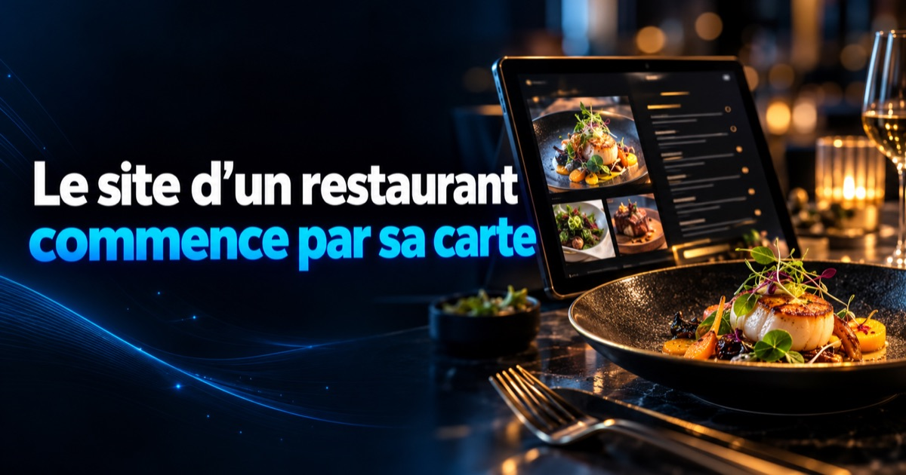

Publié le 19 octobre 2026.
La réponse courte : la carte, les horaires, la réservation — et un budget de vitrine
Le site d'un restaurant doit d'abord permettre de décider de venir : la carte à jour, lisible sur téléphone, les horaires, l'adresse et un moyen de réserver. Tout le reste — photos, privatisation, histoire de la maison — vient ensuite. Côté budget, c'est un site vitrine : entre 900 et 5 000 euros chez un professionnel d'après la grille de France Num (mise à jour le 20 juin 2025), plus le nom de domaine, l'hébergement et, le cas échéant, l'abonnement à un outil de réservation.
Chez Fiducia IA, un site vitrine de restaurant coûte de 750 € à 2 500 €, en montants nets (franchise en base de TVA, article 293 B du CGI). Le détail est plus bas, avec ce qui fait varier la facture.
Ce que les clients cherchent avant de pousser la porte
Les informations pratiques, avant l'ambiance. C'est aussi ce que publient les restaurateurs eux-mêmes : dans l'enquête de l'Afnic menée auprès de 1 009 restaurateurs en juillet-août 2022, 75 % ont un site dédié, 75 % communiquent leurs horaires en ligne et 66 % le type de prestations proposées.
Le même travail signale les informations qui font la différence au moment du choix : le jour d'ouverture, la présence d'un menu végan ou sans gluten, la possibilité de privatiser pour un événement. Ce sont des questions précises, posées au téléphone, à Google ou désormais à un assistant IA — et un site qui y répond en clair évite autant d'appels pendant le service.
Les huit éléments que le site d'un restaurant doit contenir
Une carte publiée en texte, des informations pratiques cohérentes partout, un moyen de réserver sans friction, et des preuves visuelles réelles. Dans l'ordre d'importance :
- La carte, en texte sur une page du site — pas seulement un PDF ou une photo. Un PDF se lit mal sur téléphone, et un texte en clair est plus simple à exploiter pour les moteurs de recherche et les assistants IA. Gardez le PDF en complément, pour l'impression ;
- Les horaires et les jours de fermeture, y compris les fermetures annuelles — identiques à ceux de votre fiche Google, sinon le client ne sait plus lequel croire ;
- L'adresse, l'accès et le stationnement, avec un lien vers l'itinéraire ;
- Un moyen de réserver visible dès l'écran d'accueil : le numéro cliquable au minimum, un formulaire ou un outil de réservation si votre volume le justifie ;
- Des photos réelles de la salle, de la terrasse et des plats, pas des images de banque d'images ;
- Les régimes particuliers : végétarien, végan, sans gluten — et la manière dont vous traitez les allergies ;
- Les groupes et la privatisation, si vous les acceptez : capacité, conditions, contact ;
- Les mentions légales prévues par l'article 6-III de la loi n° 2004-575 du 21 juin 2004 (identité, adresse, téléphone, immatriculation, hébergeur), que nous détaillons dans notre page création de site internet pour artisan — les règles sont les mêmes.
Ce que la réglementation impose dès que vous vendez en ligne
Tant que le site présente seulement la carte, les obligations d'information sur les allergènes et l'origine des viandes s'appliquent en salle. Dès que vous prenez des commandes en ligne, à emporter ou en livraison, elles s'appliquent aussi au site, avant la validation de la commande.
- Allergènes. En salle, l'information sur les quatorze allergènes réglementaires — ou la manière de la consulter — doit être affichée par écrit, de façon lisible et visible (article R. 112-13 du code de la consommation, issu du décret n° 2015-447 du 17 avril 2015). Pour la vente à distance de plats non préemballés, le règlement européen n° 1169/2011 impose de fournir cette information avant la conclusion de l'achat, sur le support de vente ou par un autre moyen clairement identifié, sans frais, puis de nouveau à la livraison (Commission européenne, article 14) ;
- Origine des viandes. L'origine de la viande bovine servie au restaurant doit être indiquée depuis le décret n° 2002-1465. Le décret n° 2024-171 du 4 mars 2024 a étendu l'obligation aux viandes bovines, porcines, ovines et de volaille utilisées dans des préparations achetées toutes faites, lorsque le restaurateur en connaît l'origine, et précise que l'information est donnée avant la conclusion du contrat, y compris à distance. Les règles ont évolué plusieurs fois depuis 2022 selon les espèces : vérifiez la version en vigueur pour votre carte ;
- « Fait maison ». Si vous utilisez la mention ou le logo sur votre carte en ligne, les règles sont celles de la salle : un plat « fait maison » est élaboré sur place à partir de produits bruts, avec une liste limitée de produits admis (article D. 122-1 du code de la consommation). Une mention mal employée relève de la pratique commerciale trompeuse.
Notre conseil : même sans commande en ligne, indiquez les allergènes plat par plat sur la carte du site. Ce n'est pas exigé à ce stade, mais c'est exactement la question qu'un client allergique se pose avant de réserver.
Réservation et commande en ligne : quatre options, quatre modèles de coût
Un restaurant n'est pas obligé de passer par une plateforme. Le bon choix dépend du nombre de couverts que vous prenez en ligne et de ce que vous voulez garder : la relation client, ou la visibilité qu'apporte un annuaire.
- Le téléphone, avec un numéro cliquable en haut de chaque page : gratuit, mais il faut décrocher pendant le service ;
- Un formulaire sur le site, confirmé à la main : simple, sans abonnement, adapté aux petits volumes et aux demandes de groupe ;
- Un outil de réservation en abonnement, intégré au site : disponibilités en temps réel, rappels automatiques, fichier clients ;
- Une plateforme de réservation, qui apporte aussi de la visibilité : le modèle de prix associe souvent un abonnement et une commission par couvert réservé.
Comparez le coût sur une saison complète, pas au mois, et vérifiez à qui appartient le fichier clients si vous changez d'outil. Côté Google, la fiche d'établissement peut proposer la réservation directement, par l'intermédiaire de partenaires (Google Business Profile pour les restaurants). Ces outils sont des services tiers : nous les raccordons au site, nous ne les facturons pas à leur place.
Combien coûte un site internet de restaurant
Le prix de création d'un site de restaurant est celui d'un site vitrine ; ce qui change le budget, ce sont les abonnements qui viennent ensuite. La grille de France Num donne 500 à 2 000 € pour un site d'une seule page, 900 à 5 000 € pour un site vitrine de quelques pages et 3 000 à 10 000 € pour un site de vente en ligne. Nous détaillons ces fourchettes et les frais récurrents dans combien coûte un site internet en 2026.
Pour un restaurant, faites le compte de trois lignes récurrentes en plus de la création : le nom de domaine et l'hébergement (de l'ordre de 5 € à 50 € HT par an pour le domaine et à partir d'environ 5 € HT par mois pour l'hébergement d'un site basique, selon France Num), la mise à jour de la carte — qui la fait, et à quelle fréquence —, et l'outil de réservation ou de commande, dont le prix dépend de l'éditeur.
Nos tarifs : un site vitrine de restaurant coûte de 750 € à 2 500 € selon la complexité et le nombre de pages, en montants nets — FIDUCIA CONSEILS relève de la franchise en base de TVA (article 293 B du CGI). Le raccordement d'un outil de réservation ou de commande se chiffre au devis, après l'audit, selon l'outil retenu : nous ne publions pas de prix pour ces modules, parce qu'il dépend d'un service tiers que nous ne maîtrisons pas. Ce que nous livrons est décrit sur notre page création de site internet ; si vous avez déjà un site dépassé, voyez plutôt la refonte de site internet.
Le site ne remplit pas la salle tout seul : il travaille avec la fiche Google
Sur une recherche du type « restaurant » suivie d'une ville, Google affiche d'abord une carte avec des fiches d'établissement. Ce bloc dépend de la fiche Google Business Profile, pas du site. Le site, lui, renforce la fiche (horaires cohérents, carte détaillée, informations qu'une fiche ne contient pas) et capte les recherches plus précises.
L'ordre des chantiers est dans notre guide du SEO local pour TPE et PME, et le détail de la fiche dans notre page Google Business Profile. Les questions posées aux assistants IA — « où manger sans gluten ce soir ? » — se jouent sur les mêmes informations publiées en clair : c'est l'objet de notre page GEO — visibilité dans les IA.
Ce que montre Google sur cette question, et quand faire soi-même suffit
Nous avons relevé la première page de Google France le 12 octobre 2026 sur « création site internet restaurant ». Une réponse générée par IA s'affiche en tête et oriente vers des outils de création en libre-service ; sur neuf résultats organiques, six sont des guides ou des articles (exemples de sites, prix, méthode), un est une page d'éditeur de logiciel et deux seulement sont des pages d'agence.
Ce constat est honnête à prendre en compte : pour un restaurant qui veut seulement une page avec sa carte, ses horaires et son numéro, une formule payante d'un créateur de site en ligne peut suffire, si vous avez le temps de la tenir à jour. Un professionnel se justifie quand le site doit porter plus : plusieurs cartes ou plusieurs services, groupes et privatisation, réservation intégrée, vente à emporter, ou une visibilité locale à construire.
Questions fréquentes
Que doit contenir le site internet d'un restaurant ?
La carte à jour en texte lisible sur téléphone, les horaires et jours de fermeture, l'adresse avec l'accès et le stationnement, un moyen de réserver, des photos réelles de la salle et des plats, les options de régime (végétarien, sans gluten), la possibilité de privatiser ou de recevoir des groupes, et les mentions légales prévues par l'article 6-III de la loi n° 2004-575 du 21 juin 2004.
Combien coûte un site internet de restaurant ?
Un site vitrine réalisé par un professionnel coûte le plus souvent entre 900 et 5 000 euros d'après la grille de France Num (mise à jour le 20 juin 2025), auxquels s'ajoutent le nom de domaine, l'hébergement et la maintenance. Chez Fiducia IA, un site vitrine de restaurant coûte de 750 € à 2 500 € selon la complexité et le nombre de pages, en montants nets sans TVA à ajouter (article 293 B du CGI). Un module de réservation ou de commande en ligne se chiffre à part, après l'audit, selon l'outil retenu.
Faut-il afficher les allergènes sur le site d'un restaurant ?
Sur place, la liste des allergènes ou la façon de la consulter doit être affichée par écrit dans la salle (article R. 112-13 du code de la consommation, issu du décret n° 2015-447). Si le restaurant vend en ligne, à emporter ou en livraison, l'information sur les allergènes doit être fournie avant la conclusion de l'achat, sur le site ou par un autre moyen clairement identifié, sans frais, puis à nouveau à la livraison (article 14 du règlement européen n° 1169/2011). Une carte en ligne sans commande n'est pas une vente à distance, mais y indiquer les allergènes évite des appels et des erreurs.
Une page Facebook ou une fiche Google suffit-elle pour un restaurant ?
Elles sont indispensables mais ne remplacent pas un site. La fiche Google Business Profile est ce qui fait apparaître le restaurant sur Google Maps et peut proposer la réservation depuis la fiche via des partenaires ; le site est la seule adresse que vous contrôlez entièrement, où la carte, les conditions de groupe et les informations légales restent à jour sans dépendre d'une plateforme. Les deux doivent afficher les mêmes horaires et le même numéro.
Faut-il passer par une plateforme de réservation ?
Ce n'est pas obligatoire. Un restaurant peut prendre ses réservations par téléphone, par un formulaire sur son site, par un outil de réservation en abonnement ou par une plateforme qui apporte aussi de la visibilité. Les modèles de prix diffèrent (abonnement mensuel, commission par couvert, ou les deux) : comparez le coût réel sur une saison complète à votre nombre de couverts réservés en ligne, et vérifiez à qui appartient le fichier clients.
Peut-on mettre seulement la carte en PDF sur le site ?
C'est possible, mais déconseillé comme seul format. Un PDF ou une photo de la carte se lit mal sur téléphone, et son texte est plus difficile à exploiter pour les moteurs de recherche et les assistants IA qui répondent aux questions du type « restaurant avec menu végétarien près de chez moi ». Publiez la carte en texte sur une page du site, et gardez le PDF en complément pour l'impression.